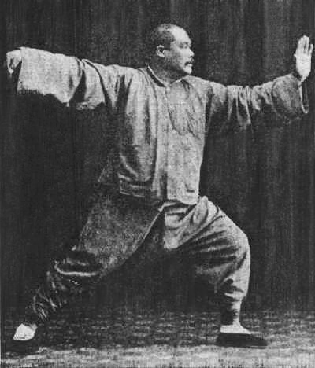

Czym jest forma, popularna forma 24 ruchów, postawa i praca nóg oraz silk reeling
Aktualizacja: 2026-06
Forma (chiń. taolu) to serce praktyki tai chi: ustalony, zapamiętany ciąg ruchów wykonywany solo, od początku do końca, w powolnym i ciągłym tempie. To właśnie ćwiczenie formy buduje pamięć ruchową, równowagę i zrozumienie zasad opisanych w rozdziale o podstawach.
Taolu to z góry określona sekwencja pozycji i przejść między nimi, ćwiczona zwykle w pojedynkę. Każdy ruch płynnie łączy się z następnym, tworząc nieprzerwany ciąg, który — zależnie od długości — trwa od kilku do kilkudziesięciu minut. Z tego powodu formę często nazywa się „ruchomą medytacją": uwaga skupia się na ciele i oddechu, a powtarzalny układ pozwala umysłowi się wyciszyć.
Forma pełni kilka funkcji jednocześnie:
Forma 24 ruchów, zwana też pekińską lub uproszczoną, została opracowana w 1956 roku przez komisję ekspertów na zlecenie chińskich władz sportowych. Stworzono ją na bazie stylu Yang, skracając i porządkując klasyczny układ tak, by dało się go opanować w kilka miesięcy. Dzięki temu stała się najpopularniejszą formą tai chi na świecie — ćwiczoną w parkach, klubach i na lekcjach od Chin po Europę.
Forma składa się z 24 nazwanych ruchów wykonywanych w stałej kolejności. Nazwy są obrazowe i często odwołują się do zwierząt lub przyrody. Oto wybrane, znane ruchy:
| Ruch | Opis |
|---|---|
| Otwarcie | Spokojne uniesienie i opuszczenie rąk rozpoczynające formę; ustawienie postawy i oddechu. |
| Dzika grzywa konia | Naprzemienne „rozdzielanie" rąk z krokiem w przód — obszerny, otwierający ruch. |
| Żuraw rozkłada skrzydła | Jedna ręka unosi się w górę, druga opada w dół, ciężar na tylnej nodze — pozycja lekka i wyprostowana. |
| Głaskanie struny w pi-pa | Ręce układają się jak przy trzymaniu lutni (pipa); subtelny, „zbierający" gest. |
| Odpędzanie małpy | Cofanie się krok po kroku z naprzemiennym wypychaniem dłoni — jeden z nielicznych ruchów w tył. |
| Chwytanie wróbla za ogon | Złożona sekwencja zawierająca cztery podstawowe „energie": peng, lu, ji, an (odbicie, ustąpienie, naciśnięcie, pchnięcie). |
| Bicz (pojedynczy bicz) | Szeroko rozłożone ręce — jedna z dłonią w kształcie „dzioba", druga wypychająca; charakterystyczna, rozpięta pozycja. |
| Dłonie obłoków (cloud hands) | Płynne, koliste przesuwanie rąk przed tułowiem z krokiem w bok — talia obraca się jak oś. |
| Zamknięcie | Ruchy „zbierające" energię i sprowadzające ciało do spokojnej postawy stojącej — domknięcie formy. |
O jakości formy decydują przede wszystkim nogi i talia, a nie ręce. Kluczowe jest nieustanne, świadome przenoszenie ciężaru między nogami zgodnie z zasadą pełne/puste: noga obciążona jest „pełna", odciążona — „pusta", a przejścia między nimi muszą być płynne i kontrolowane.
W tai chi wykorzystuje się kilka podstawowych stójek (postaw). Najczęstsze to:
| Postawa | Opis |
|---|---|
| Łuk — gongbu (弓步) | „Postawa łucznika": noga przednia ugięta (ciężar ~70% z przodu), tylna wyprostowana — stabilna baza do ruchów w przód. |
| Pusta — xubu (虚步) | Niemal cały ciężar na nodze tylnej, przednia tylko lekko dotyka podłoża palcami — gotowa do kroku lub kopnięcia. |
| Postawa jeźdźca — mabu (马步) | Stopy szeroko, ciężar równo na obu nogach, biodra nisko — wzmacnia nogi i uczy zakorzenienia. |
We wszystkich postawach obowiązuje ta sama zasada: talia (kua) jest osią. To obrót bioder, a nie samo ramię, kieruje ręką i przenosi siłę z nóg do dłoni. Kolano nigdy nie powinno wychodzić poza linię palców stopy — to chroni staw przed przeciążeniem.

Otwarta, wyprostowana sylwetka i równe, wolne tempo charakterystyczne dla stylu Yang.
Silk reeling (chiń. chan si jin, 缠丝劲 — „siła nawijania jedwabiu") to spiralne, ciągłe ruchy okrężne całego ciała, stanowiące jedno z najważniejszych ćwiczeń bazowych — szczególnie w stylu Chen. Nazwa oddaje istotę ruchu: ma być równy, ciągły i nieprzerwany, jak nawijanie delikatnej nici jedwabiu z kokonu, którą zbyt gwałtowne szarpnięcie natychmiast by zerwało.
Ćwiczenia silk reeling wykonuje się zwykle jako proste, powtarzalne wzorce (np. krążenie jedną ręką w poziomej lub pionowej spirali), zanim przejdzie się do pełnej formy. Uczą one: